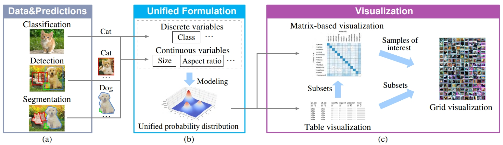
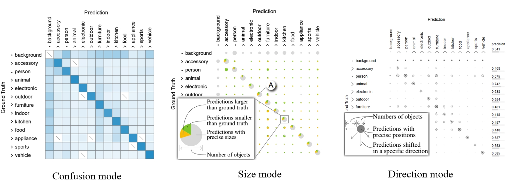
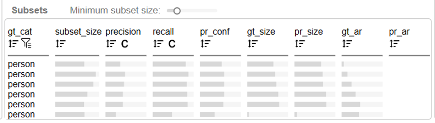
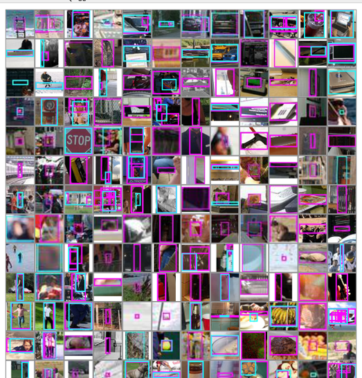
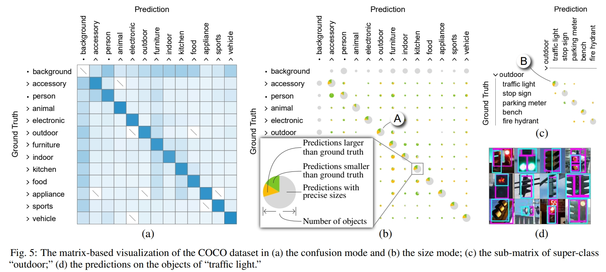
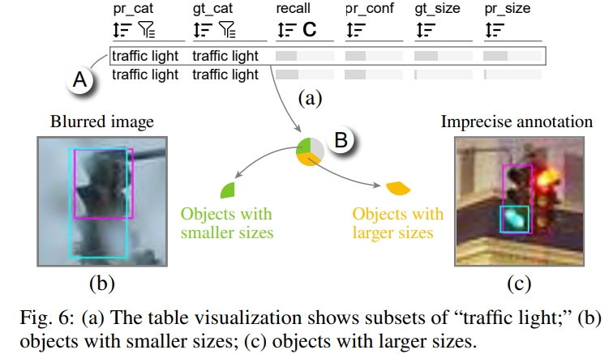

论文：A Unified Interactive Model Evaluation for Classification, Object Detection, and Instance Segmentation in Computer Vision
作者：Changjian Chen, Yukai Guo, Fengyuan Tian, Shilong Liu, Weikai Yang,Zhaowei Wang, Jing Wu, Hang Su, Hanspeter Pfister, and Shixia Liu
发表：VIS 2023
在现有的视觉模型评估工具中，主要侧重于评估分类模型，这导致了在评估更复杂模型（如目标检测）时存在一定的空白。在本文，我们开发了一个开源的视觉分析工具——Uni-Evaluator，用于支持计算机视觉中分类、目标检测和实例分割的统一模型评估。我们方法的关键思想是将不同任务中的离散和连续预测形式化为统一的概率分布。基于这些分布，我们开发了以下内容：1）基于矩阵的可视化，提供模型性能的概览；2）基于表格的可视化，识别模型表现不佳的问题数据子集；3）基于网格的可视化，展示感兴趣的样本。这些可视化方法共同作用，从全局概览到个别样本，促进了模型评估的进行。两个案例研究展示了 Uni-Evaluator 在评估模型性能并做出改进方面的有效性。
背景介绍
模型评估是评估机器学习模型性能并帮助识别性能不佳原因以进一步改进的过程。这是机器学习模型开发中的关键步骤。例如，机器学习实践者通常会评估使用不同参数生成的模型，并选择最佳模型进行部署。目前，评估模型最广泛使用的方式是使用性能指标，例如准确率和 mAP（平均精度均值）。然而，仅使用这些指标有时可能会产生误导。为了更好地理解模型性能，需要更细粒度的评估。因此，混淆矩阵被提出，它提供了在类别级别上的评估，展示了类别之间的混淆情况。然而，它们只关注分类任务，其中样本分类的准确性是关注的焦点。此外，像目标检测这样的任务中，有时会同时考虑多个任务。尽管我们可以为不同任务开发不同的细粒度模型评估方法，但这会增加用户在不同方法之间切换时的学习成本和认知负荷。因此，需要一种适用于计算机视觉中不同任务的统一模型评估方法。
本文的贡献有三点：
- 协调的可视化，以解释不同级别的模型性能，包括基于矩阵的可视化，具有三种评估模式，由基于频繁模式挖掘的搜索支持的表格可视化，以及网格可视化。
- 一种统一的概率分布方法，用于联合建模离散和连续预测，以评估一个工具中不同模型的性能。
- 一个开源的可视化分析工具，将概率分布与协调的可视化相结合，以支持计算机视觉任务的统一模型评估。
相关工作
- Model Evaluation in Computer Vision
- 《TIDE: A General Toolbox for Identifying Object Detection Errors》将目标检测任务分为 6 种不同类型。
- Model Evaluation in Visualization
- 《Neo: Generalizing Confusion Matrix Visualization to Hierarchical and Multi-Output Labels》采用概率分布来表示混淆矩阵。这些分布将传统的混淆矩阵推广到支持层次结构和多输出标签。
系统框架

（a）给定包含离散和连续变量的数据样本和模型预测
（b）统一的表达模块通过概率分布对它们进行建模
（c）可视化模块解释不同层次上的模型性能
可视化设计
Uni-Evaluator 的主要可视化设计包括：
矩阵可视化
- confusion mode：在混淆模式下，单元格表示分类任务中的样本数量以及检测/分割任务中的物体数量。在每个单元格中，通过填充颜色来编码在类别之间混淆的样本/物体的频率，颜色从白色到蓝色渐变。单元格颜色越深，表示相关类别之间的混淆越严重。
- size mode：利用一个有三个扇区的饼图来总结每个单元格中预测物体的大小。灰色扇区代表预测大小准确的物体，而黄色/绿色扇区代表与地面真相相比更大/更小的物体。
- direction mode：用八个箭头表示方向。每个箭头的长度表示在该方向上移动的预测物体的数量。中间添加了一个圆圈，代表预测位置准确的物体。其半径表示这类物体的数量。

表格可视化：为了帮助用户识别有问题的子集，开发了基于频繁模式挖掘的搜索方法来挖掘候选子集。然后采用表格可视化来传达这些子集的属性。用户可以按照一个属性或多个属性的组合对这些子集进行排名，以找到有问题的子集。
网格可视化：网格的单元格显示了所选样本及其预测结果。

案例研究
数据集：COCO 数据集
使用过程：专家首先通过基于矩阵的可视化来分析整体性能。该矩阵最初处于混淆模式，并进行了行归一化，显示了 12 个超类之间的混淆情况。大多数非对角线单元格的颜色都非常浅（见图 5A），这表明模型在对不同超类的对象进行分类时具有很高的准确性。
为了调查预测中潜在的尺寸误差，将其切换到尺寸模式。在矩阵中，他观察到所有具有大绿色和黄色扇区的大饼状图都位于对角线上。这表明许多对象被正确分类，但其尺寸存在误差。为了调查尺寸问题的原因，E1 决定深入研究这些对角线单元格。其中尺寸误差最多的对角线单元格，即“室外”超类（图 5A），被选为例子来说明这个想法。其他对角线单元格可以以类似的方式进行分析。
为了找出“室外”超类中哪些类别导致了尺寸误差，他将这个单元格扩展为一个子矩阵（图 5C）。在子矩阵中，他发现“红绿灯”对尺寸误差做出了主要贡献（图 5B）。然而，在网格可视化中，与相关对象的预测并未显示出这些尺寸误差的明显原因（图 5D）。他随后转向表格可视化，以分析该单元格中不同子集的性能。
为了在表格可视化中找到有问题的子集，他按照召回率得分升序对子集进行排序，确定了许多召回率得分较低的子集（图 6A）。他选择了召回率得分最低的子集（图 6A），然后转向矩阵。在矩阵中，他点击了饼状图中的绿色/黄色扇区（图 6B），以检查在网格可视化中尺寸比地面实况更小/更大的预测。
通过检查尺寸较小的预测，他发现大多数这样的预测存在于模糊的图像中（图 6B）。E1 检查了训练样本，发现只有少数这样模糊的图像。他得出结论，这是模型在这些模糊图像上表现不佳的主要原因。为了解决这个问题，E1 对含有红绿灯的 4139 个训练样本应用了高斯噪声数据增强。在使用增强样本进行微调后，“红绿灯”的平均精度值从 32.7%提高到 33.1%。


专家反馈
- 对其余视觉任务也有帮助
- 图像生成
- 语义分割
- 在诊断表现不佳原因时很有帮助
未来工作
- 通过语义属性选择子集。
- 支持多模型比较。
✉️ zjuvis@cad.zju.edu.cn